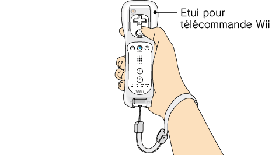

|
3
|
Utilisation de la manette
|
 |
La manière de tenir la manette dépend de la configuration que vous utilisez.

Note: veillez à toujours consulter le mode d'emploi de la manette que vous utilisez.
Suivez les étapes suivantes pour configurer la Wii Balance Board et l’utiliser.
Si la Wii Balance Board est synchronisée avec votre console Wii:
Si la Wii Balance Board n'est pas synchronisée avec votre console Wii:


Note: si le guide de votre dragonne est muni d’un levier, abaissez-le jusqu’à ce que vous entendiez un clic. Cela permettra au guide de rester en place.
|
 Veillez à ce qu’il n’y ait rien à côté ou au-dessus de vous et placez la Wii Balance Board de façon à ce qu’il y ait au moins un mètre entre vous (mains, pieds, etc.) et les personnes ou équipements domestiques (téléviseur, etc.) qui se trouvent autour de vous lors de l’utilisation.
Veillez à ce qu’il n’y ait rien à côté ou au-dessus de vous et placez la Wii Balance Board de façon à ce qu’il y ait au moins un mètre entre vous (mains, pieds, etc.) et les personnes ou équipements domestiques (téléviseur, etc.) qui se trouvent autour de vous lors de l’utilisation.


 |
 |
 |